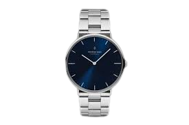

At WatcHGoods, we are passionate about timepieces and dedicated to providing our customers with an exceptional watch-buying experience. Established in 2023, we have become a trusted destination for watch enthusiasts and collectors alike. With an extensive collection of the finest watches from renowned brands, we strive to cater to a wide range of tastes and preferences.
At the core of our business, we believe that a watch is more than just a timekeeping device; it is a symbol of style, craftsmanship, and personal expression. We curate our collection with meticulous attention to detail, ensuring that each watch we offer represents the perfect blend of quality, aesthetics, and functionality.
Step into our store or browse our online catalog, and you'll discover an impressive assortment of watches from prestigious brands around the world. Whether you're seeking a classic timepiece, a sporty companion for your active lifestyle, or a luxurious statement piece, we have something to suit every occasion and budget. Our collection includes renowned brands such as Rolex, Omega, Tag Heuer, Breitling, and many more.
We understand that choosing the perfect watch can be a daunting task, given the multitude of options available. Our knowledgeable and friendly staff are here to assist you every step of the way. Whether you need help understanding the intricate features of a particular model or want advice on selecting the ideal watch for a special occasion, we are dedicated to providing personalized assistance to ensure your satisfaction.
We are committed to offering only authentic, brand-new watches sourced directly from authorized dealers. Our strict quality control measures ensure that each timepiece meets the highest standards of craftsmanship, accuracy, and durability. We value the trust our customers place in us and strive to uphold our reputation for delivering genuine products.
Your satisfaction is our top priority. We aim to create a seamless and enjoyable shopping experience for all our customers. From the moment you enter our store or visit our website, you will be greeted with professionalism and a warm, welcoming atmosphere. We offer convenient payment options, secure transactions, and fast shipping to ensure that your watch reaches you promptly and safely.
We believe in fostering a vibrant watch-loving community. Throughout the year, we organize events, workshops, and gatherings where watch enthusiasts can come together to share their passion, learn from experts, and discover the latest trends in the industry. Stay connected with us through our social media channels and newsletter to be part of these exciting events.
Thank you for choosing WatcHGoods as your trusted destination for exceptional timepieces. We look forward to helping you find the perfect watch that reflects your individuality and accompanies you on your journey through time.